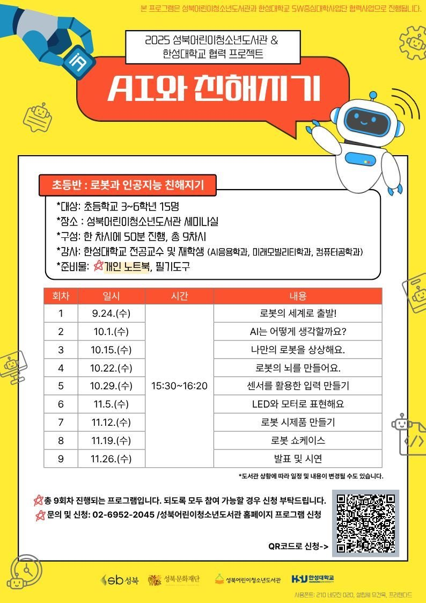

2025.09 ~ 11
AI와 친해지기 — 초등 로봇 교육
성북어린이청소년도서관 × 한성대학교 협력 프로그램 · 초등반 강사
Overview
기간2025.09.24 ~ 11.26 · 매주 수요일, 총 9차시 (차시당 50분)
주관성북어린이청소년도서관 × 한성대학교 SW중심대학사업단
대상초등학교 3~6학년 15명
교구micro:bit 기반 스마트 로봇 큐트봇 PRO, MakeCode 블록 코딩, 허스키렌즈(AI 카메라)
역할강사 · 보조강사 — 6·7차시(라인트레이싱) 직접 강의, 나머지 차시는 실습 지도와 하드웨어·코드 문제 해결

Curriculum (실제 진행 기준)
1차시micro:bit 구조와 큐트봇 PRO 동작 원리, 전원·안전 수칙, 블록 코딩 기초
2차시MakeCode로 코드 작성·다운로드 — 다운로드가 안 되는 학생들의 USB 케이블·절차 점검
3차시LED 헤드라이트 제어 — A·B 버튼 입력에 따라 색이 바뀌는 프로그램
4차시전·후·좌·우 이동, 좌우 바퀴 속도 차로 회전 / 빛 센서로 빛 따라가는 주행
5차시초음파 센서 거리 계산 — 20 cm 이하 감속, 10 cm 이하 정지 후 회전하는 장애물 회피 + LED 상태 표시
6차시 · 강의적외선 센서 라인트레이싱 — 센서 1개로 선의 경계 따라가기 → 2개로 선 중앙 유지
7차시 · 강의센서 4개 고정밀 라인트레이싱, Fast/Slow 모드 전환 / 외각의 합 360°로 정다각형 주행
8차시허스키렌즈 객체 분류로 색 카드 학습 — I2C 연결 세팅 지원
9차시카드 ID별 동작 — 정지 카드 정지, 빨간 카드 후진·빨간 불, 초록 카드 전진·초록 불
가르치며 신경 쓴 것
- 대신 해결해 주지 않기 — 오류가 나면 원인과 확인 순서를 같이 짚어서, 다음엔 아이들이 스스로 점검하게
- 보이게 만들기 — 센서 값(0과 1)을 화면에 띄워 보여 주고, 센서의 물리적 위치와 코드 논리를 연결해서 설명
- 수학을 로봇으로 — 정다각형 외각의 합 360°를 「360 ÷ 변의 개수」 회전 각도로 바꿔 직접 주행